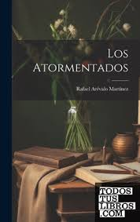

Los atormentados
En esta novela, Rafael Arévalo Martínez, uno de los grandes
escritores guatemaltecos del siglo XX, explora los temas
de la locura y la muerte a través de la historia de un
joven que busca escapar de su obsesión por una mujer. Con una prosa poética y
evocadora, Arévalo Martínez crea un mundo onírico
y atormentado que cautivará al lector.
Si deseas leer el libro "Los Atormentados"
puedes hacerlo aquí
¡Espero que te guste!